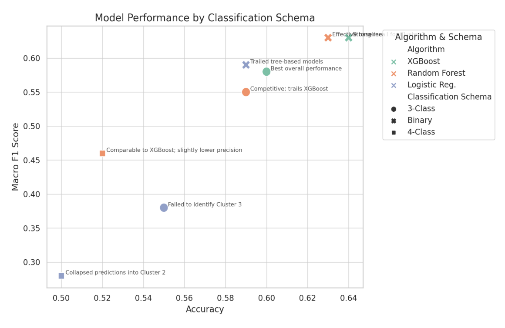
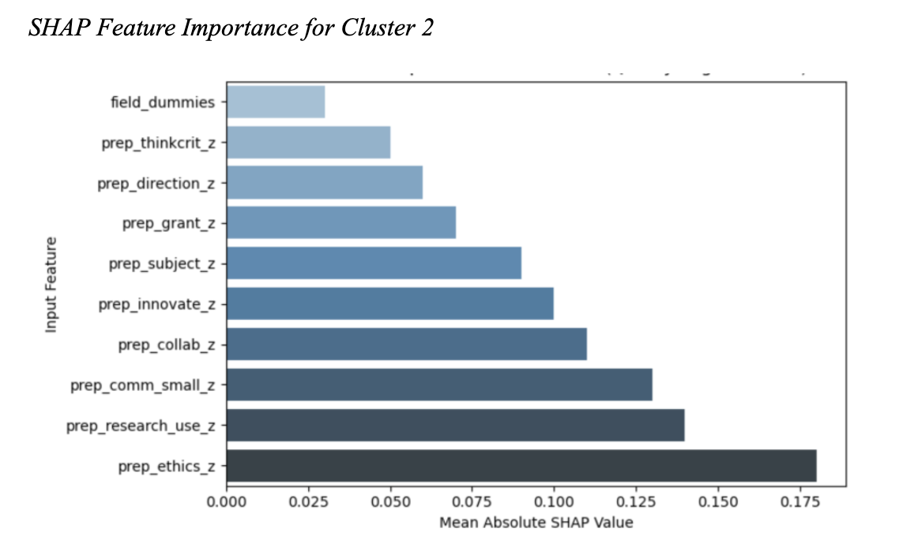

Predicting persona membership for new student profiles, benchmarked across three classification schemas with SHAP-based explainability for advising deployment.
Research Question
The third research question asks whether persona membership can be predicted for new students from the same feature space used to derive the personas in Part 2. The framing is consequential. The study extends an empirically-grounded persona structure into a deployable classifier, allowing the personas to function as a guidance tool rather than a descriptive artifact. To deploy responsibly, the classifier must do more than predict accurately. It must explain its predictions in terms that career advisors can interpret, contextualize for individual students, and contest where appropriate.
Multiple algorithms are benchmarked across three classification schemas (4-class matching the original cluster solution, 3-class collapsing the smallest group into its theoretically nearest neighbor, and binary distinguishing high-engagement from all others). XGBoost on the 3-class schema produces the best balance of accuracy and macro F1 score, and SHAP analysis reveals which features drive each prediction.
Approach
The study benchmarks XGBoost, Random Forest, and logistic regression across three classification schemas to surface the genuine performance frontier rather than overfitting to a single configuration. The 4-class schema mirrors the original cluster structure but suffers from severe class imbalance (Cluster 3 represents only 5.6 percent of the sample). The binary schema collapses too much signal, treating all non-engaged groups as equivalent. The 3-class schema preserves the most theoretically meaningful distinctions while producing tractable class sizes. Across schemas, XGBoost consistently outperforms tree-based and linear baselines on macro F1, with the 3-class XGBoost configuration producing the best overall performance at accuracy 0.60 and macro F1 0.58.

For deployment in a career advising context, predictive accuracy is necessary but not sufficient. The classifier must explain why a student was assigned to a given persona in terms an advisor can engage with. SHAP analysis surfaces the features driving each prediction and makes the model's reasoning legible. For the central cluster representing the largest population segment, the most influential features cluster around prep_ethics_z, prep_research_use_z, and prep_comm_small_z, surfacing dimensions that align with how advisors already discuss career fit with students. The model's reasoning maps onto the advising vocabulary, not against it.

Outcome
The 3-class XGBoost configuration informed the model design adopted in the Meridian career intelligence platform, where the persona structure, feature set, and explainability approach surfaced in this work shape the production system. The benchmarking documented here, including the known failure modes for each configuration, frames how advisors interpret and contextualize Meridian outputs in their work with individual students. The full evaluation code and reproducibility materials accompany the dissertation as a methodological appendix.